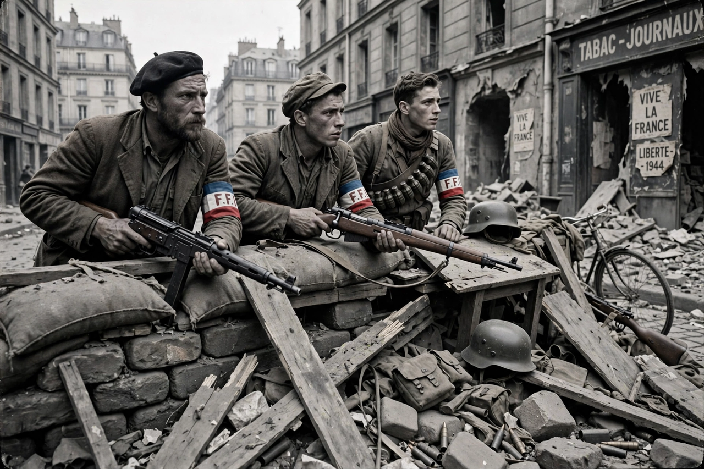

French Resistance

| French Resistance | |
| Active | 1940–1944 |
|---|---|
| Opponents | German occupation forces; Vichy regime and its Milice |
| Allied with | Free France; Allied intelligence services (SOE, OSS) |
| Unified | Conseil National de la Résistance (CNR), May 1943 |
| Armed wing | French Forces of the Interior (FFI), 1944 |
The French Resistance (French: La Résistance) was the collection of movements and networks that fought the Nazi occupation of France and the collaborationist Vichy regime during the Second World War. Beginning with scattered acts of defiance after the armistice of June 1940, it grew into a broad clandestine struggle — intelligence gathering, sabotage, escape lines, underground publishing and guerrilla warfare — and played a significant part in the liberation of France in 1944.
- Origins
- Networks and movements
- Unification under de Gaulle
- The maquis and liberation
- Repression and memory
Origins
Resistance began almost at once but on a tiny scale: individuals who refused defeat, printed tracts, cut telephone cables, or hid Allied airmen. The Musée de l'Homme group in Paris, founded in 1940, was among the first networks. Motivation varied — patriotism, communism, Gaullism, Jewish self-defence, or resistance to forced labour — and many joined only after Germany occupied the southern zone in November 1942 and introduced the Service du travail obligatoire (STO) in 1943, which drove thousands of young men to flee to the countryside.
Networks and movements
The Resistance divided loosely into réseaux (networks) devoted to intelligence, escape and sabotage, often linked to London and the British Special Operations Executive (SOE), and mouvements that recruited broadly, published clandestine newspapers — Combat, Libération, Franc-Tireur, Défense de la France — and sought political influence. In the south the main movements united as the Mouvements Unis de la Résistance in early 1943. The Communist Party, after Germany invaded the Soviet Union in June 1941, built the Francs-Tireurs et Partisans (FTP), among the most active armed groups. Women served throughout, as couriers, printers and organisers; foreign fighters, including Spanish Republicans and immigrant workers of the FTP-MOI — the group of Missak Manouchian, executed in 1944 and immortalised on the German "Affiche rouge" — played a prominent role.
Unification under de Gaulle
Jean Moulin, de Gaulle's delegate, worked to subordinate the internal resistance to Free France and to win its allegiance to de Gaulle. In May 1943 he presided over the first meeting in Paris of the Conseil National de la Résistance (CNR), uniting movements, parties and unions. Moulin was arrested the following month at Caluire, tortured by the Gestapo officer Klaus Barbie, and died without betraying his mission. The CNR's programme of March 1944 promised sweeping social reform after liberation and shaped the postwar French settlement.
The maquis and liberation
Rural guerrilla bands, the maquis, swelled with STO evaders and fought a dangerous war against German forces and the Vichy Milice; uprisings on the Glières plateau and at the Vercors in 1944 were crushed with heavy losses. In February 1944 the armed groups were nominally united as the French Forces of the Interior (FFI). Around the Normandy landings of June 1944, Resistance sabotage of railways and telecommunications — directed by radio messages from London — hampered German reinforcements, and in August the Resistance rose in Paris, whose liberation on 25 August 1944 became the movement's defining moment.
Repression and memory
Tens of thousands of résistants were deported, tortured or executed; villages such as Oradour-sur-Glane were destroyed in reprisal. After the war, the Resistance became foundational to French national identity — sometimes to the point of myth, in the "résistancialisme" that downplayed the extent of collaboration. Historians since the 1970s have given a more complex picture, while figures such as Jean Moulin, whose ashes were transferred to the Panthéon in 1964, remain central to France's civic memory.
See also: Free France; Philippe Pétain; Armistice of 22 June 1940; Jean Moulin; Charles de Gaulle.